Nytt / Fra arkivet
Nyhetsarkiv
Eldre nyheter
November 2022
Vant Eiendomsprisen 2022
Eksterne publikasjoner
Mai 2022
Trondheims nye sykkelhotell
Eksterne publikasjoner
Mai 2022
Blir gratis i en prøveperiode
Eksterne publikasjoner
Oktober 2020
Vaulalia
Eksterne publikasjoner
Oktober 2021
Fylkesmannsboligen
Eksterne publikasjoner
September 2020
Sykkelhotell
Eksterne publikasjoner
August 2018
Brenneriet på Ferstad gård
Eksterne publikasjoner
Desember 2018
Et personlig hjem med særpreg, lunhet og varme
Eksterne publikasjoner
Mars 2018
Ullådalen
Eksterne publikasjoner
Februar 2018
Dezeen
Eksterne publikasjoner
September 2017
Bygg i elva
Eksterne publikasjoner
September 2016
Bygninger som henger sammen
Eksterne publikasjoner
Mars 2015
Grønt lys for Bryggerikvartalet
Eksterne publikasjoner
August 2014
Internasjonal publisering
Eksterne publikasjoner
Januar 2014
Alt klart for kunsthall
Eksterne publikasjoner
Oktober 2013
Meninger 14. oktober 2013
Eksterne publikasjoner
Juni 2013
Hederlig omtale
Eksterne publikasjoner
Juni 2013
Brun-kvartalet
Eksterne publikasjoner
Mai 2013
Meninger 18. mai 2013
Eksterne publikasjoner
September 2010
Intervju om arkitektureksport
Eksterne publikasjoner
Juni 2010
Intervju med Gunnar Stenberg
Eksterne publikasjoner
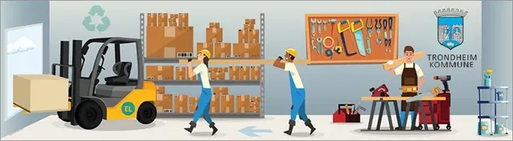
Fra arkivet
Vinner av arkitektkonkurranse
Ombygging / nybygg: Gjenbrukssentralen i Trondheim
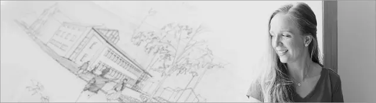
Fra arkivet
Slutter hos Bergersen
Marianne
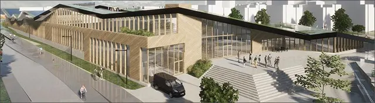
Fra arkivet
Vinner av arkitektkonkurranse
Mulighetsstudie – bydelsbasseng på Moholt
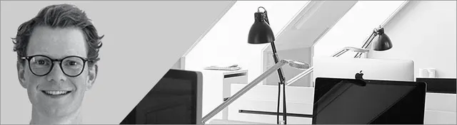
Fra arkivet
Ny ansatt
Jørgen Tellefsen-Relling

Fra arkivet
Mercurgården
Vinner av Eiendomsprisen 2022
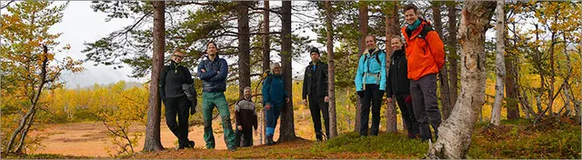
Fra arkivet
Hytteweekend
Arkitekter til fjells
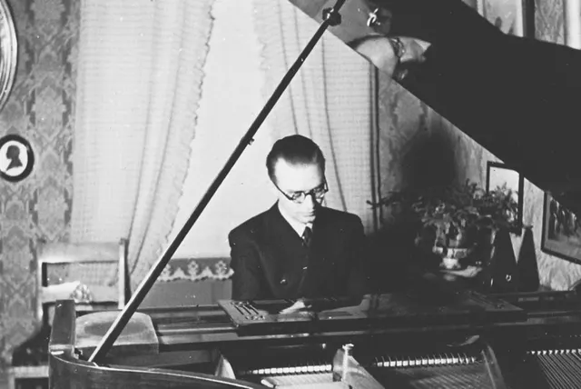
Fra arkivet
Knut Bergersen
Trondheims byarkitekt 1950–1955
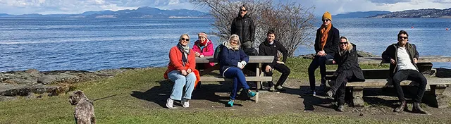
Fra arkivet
Studietur utsatt
Vårtur i Trondheim
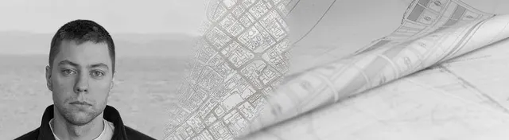
Fra arkivet
Ny ansatt
Simon Skogstad
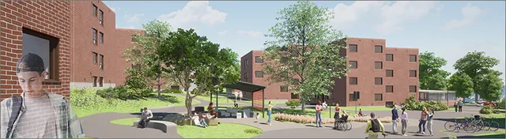
Fra arkivet
Vi er med på oppgraderingen
Moholt Allé
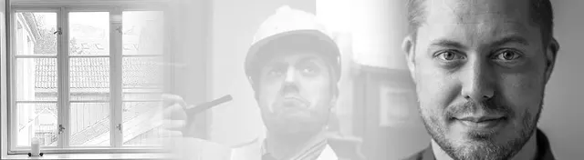
Fra arkivet
Slutter hos Bergersen
Kjetil Nordø
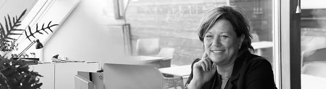
Fra arkivet
Slutter hos Bergersen
Kristin Grankvist
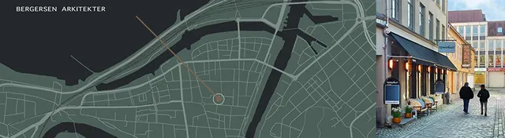
Fra arkivet
Vedrørende Covid-19
Status
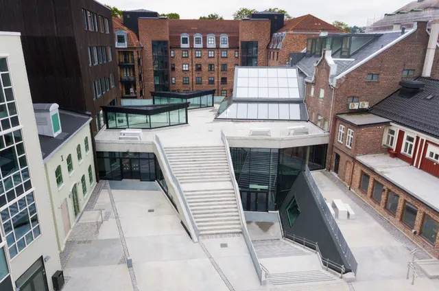
Fra arkivet
Tildelt pris
Trondheim kommunes byggeskikkpris 2018
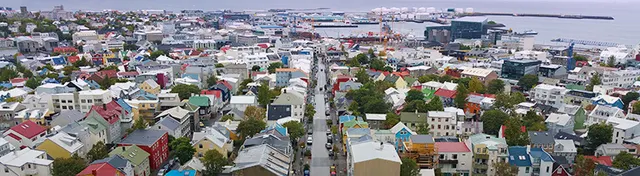
Fra arkivet
Studietur
Til Island / Reykjavik
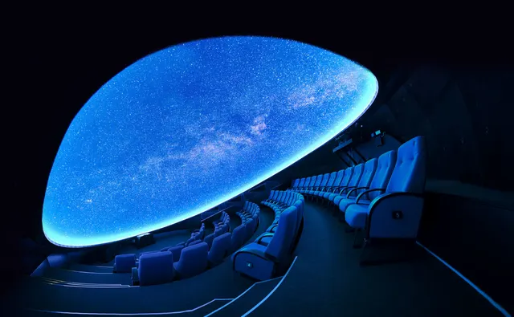
Fra arkivet
3d-planetariumet er åpnet
Vitensenteret i Trondheim
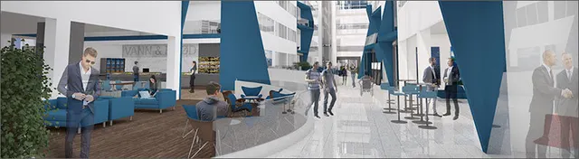
Fra arkivet
Vinner av arkitektkonkurranse
Pirsenteret, innvendig gate
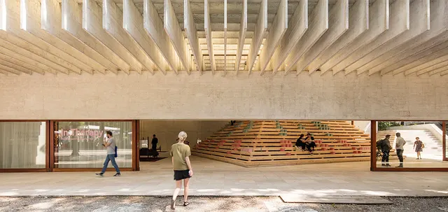
Fra arkivet
La Biennale di Venezia 2016
En del av den nordiske paviljongen på Veneziabiennalen
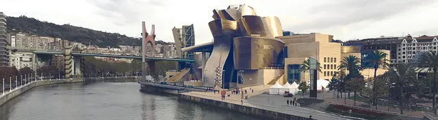
Fra arkivet
Studietur
Til Baskerland – Bilbao og San Sebastián
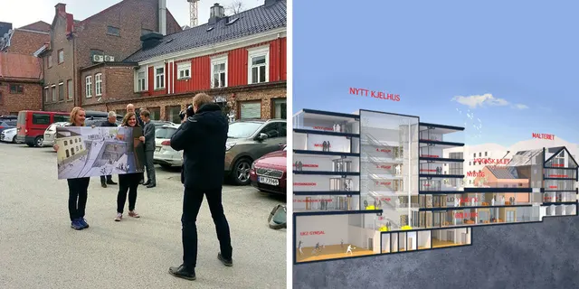
Fra arkivet
Nybygg og ombygging ved E.C. Dahls-kvartalet
i Trondheim
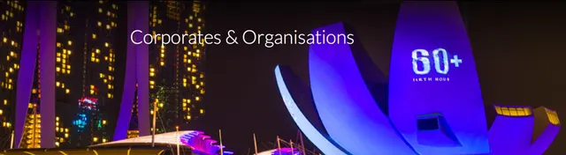
Fra arkivet
Vi er med på Earth Hour
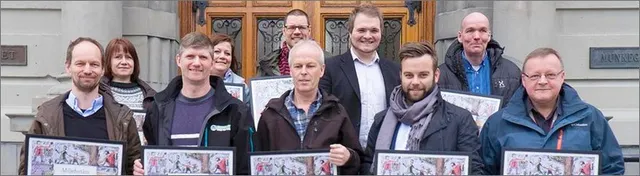
Fra arkivet
Sertifisert miljøfyrtårnbedrift
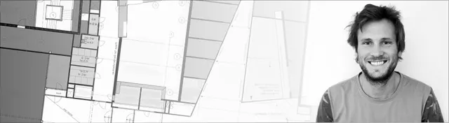
Fra arkivet
Ny ansatt
Thov Øye Sanden
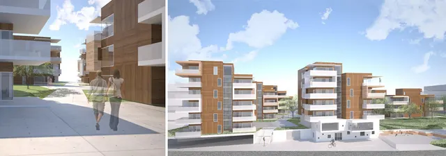
Fra arkivet
Vinner av arkitektkonkurranse
Lade Allé
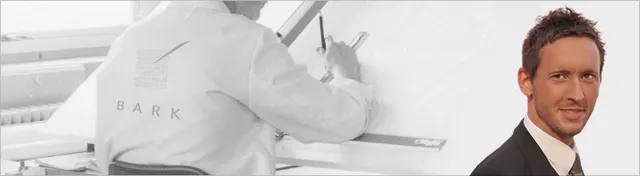
Fra arkivet
Ny ansatt
Jan-Kristian Orvik
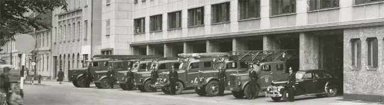
Fra arkivet
NCC rehabiliterer Brannstasjonen
Mars 2009
Fokuskvartalet
Eksterne publikasjoner
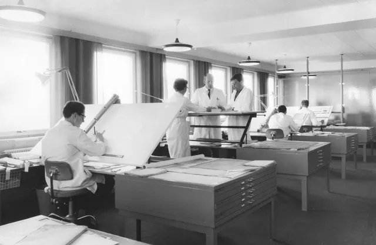
Fra arkivet
Miljøfyrtårnsertifisering
Bergersen Arkitekter tar ansvar
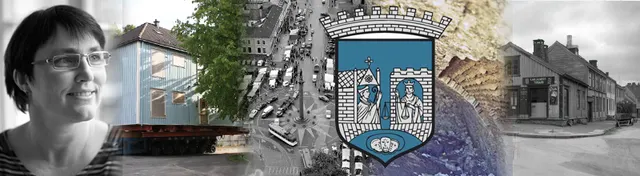
Fra arkivet
Kahrs til Byantikvaren
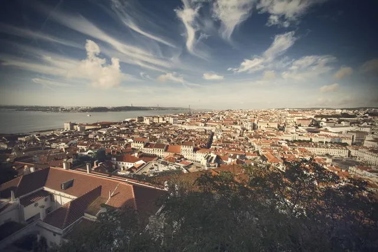
Fra arkivet
Studietur
Til Portugal
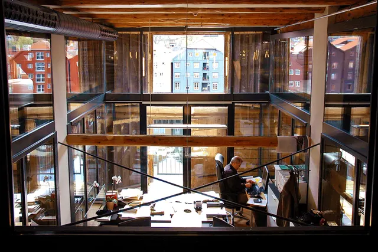
Fra arkivet
Hedrende omtale
Trondheim kommunes byggeskikkpris 2013
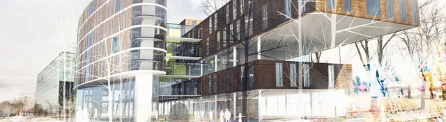
Fra arkivet
Arkitektkonkurranse
Sluppenveien
Fra arkivet
Brun-kvartalet omtales i Adressa
Vant Eiendomsprisen 2022
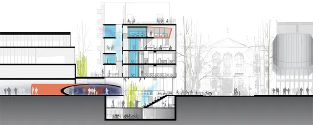
Fra arkivet
«Bankstasjonen» vinner av arkitektkonkurranse
La oss begynne med en samtale